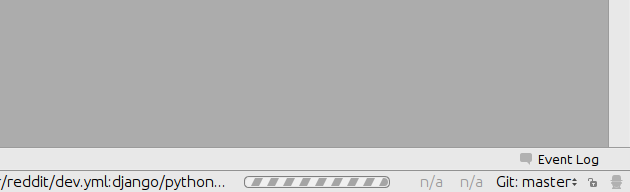
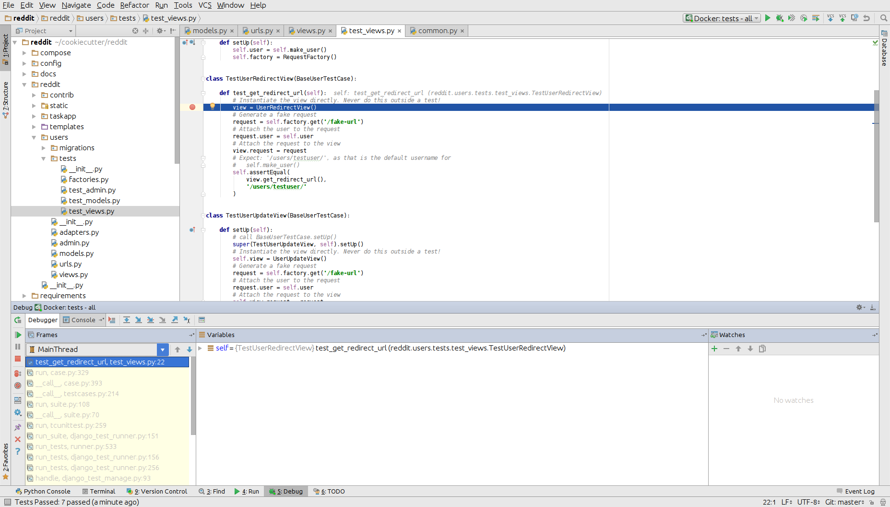
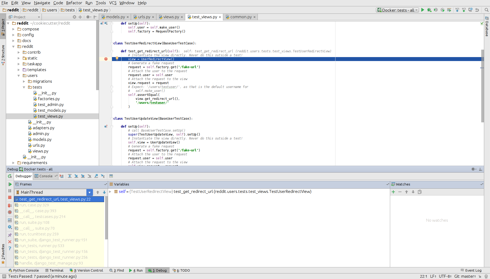
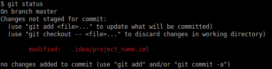

Docker Remote Debugging¶
To connect to python remote interpreter inside docker, you have to make sure first, that Pycharm is aware of your docker.
Go to Settings > Build, Execution, Deployment > Docker. If you are on linux, you can use docker directly using its socket unix:///var/run/docker.sock, if you are on Windows or Mac, make sure that you have docker-machine installed, then you can simply Import credentials from Docker Machine.

Configure Remote Python Interpreter¶
This repository comes with already prepared “Run/Debug Configurations” for docker.
But as you can see, at the beggining there is something wrong with them. They have red X on django icon, and they cannot be used, withot configuring remote python interpteter. To do that, you have to go to Settings > Build, Execution, Deployment first.
Next, you have to add new remote python interpreter, based on already tested deployment settings. Go to Settings > Project > Project Interpreter. Click on the cog icon, and click Add Remote.

Switch to Docker Compose and select dev.yml file from directory of your project, next set Service name to django

Because Pycharm restarts container every time you use Configuration Run, to not have server restarted during running tests, we defined second service in dev.yml file called pycharm. To use it, you have to add interpreter of second service as well.
The final result should be:
Having that, click OK. Close Settings panel, and wait few seconds...
After few seconds, all Run/Debug Configurations should be ready to use.

Things you can do with provided configuration:
- run and debug python code

- run and debug tests
 

- run and debug migrations or different django managment commands
- and many others..
Known issues¶
- Pycharm hangs on “Connecting to Debugger”

This might be fault of your firewall. Take a look on this ticket - https://youtrack.jetbrains.com/issue/PY-18913
- Modified files in .idea directory
Most of the files from .idea/ were added to .gitignore with a few exceptions, which were made, to provide “ready to go” configuration. After adding remote interpreter some of these files are altered by PyCharm:
In theory you can remove them from repository, but then, other people will lose a ability to initialize a project from provided configurations as you did. To get rid of this annoying state, you can run command:
$ git update-index --assume-unchanged ixbr_api.iml